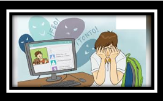
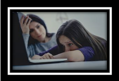
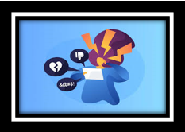

El estudio del ciberbullying es relativamente reciente y son escasas las investigaciones que han indagado sobre las causas de este como lo pueden ser:
Redes sociales como Facebook, Twitter, Instagram, aplicaciones de mensajería como WhatsApp, Skype, Viver, servicios de mensajería electrónica como Hotmail, Gmail, Yahoo… Todos ellos nos permiten comunicarnos de una forma fácil y rápida.
Sin embargo, también nos aíslan del mundo real.
El mundo virtual cobra especial importancia cuando lo utilizan niños y adolescentes, ya que acceden de forma directa y autónoma (muchas veces sin la vigilancia de sus padres) a un mundo muy difícil de controlar.
Los padres y maestros son las figuras de autoridad de niños y adolescentes y es aconsejable que tengan cierto control sobre las actividades que hacen sus hijos/alumnos en internet. Cuando hay falta de control, es más probable que aparezcan estos actos de violencia.
Obviamente, cuando un niño o adolescente tiene unos valores de respeto, tolerancia y amabilidad, no tendrá conductas de violencia como el ciberbullying hacia amistades o conocidos.
Sin embargo, cabe destacar que los niños y adolescentes se encuentran en plena exploración de su propia existencia, buscando encajar en los distintos grupos sociales y cualquier aspecto que desencaje o sea diferente en uno de ellos, se convierte en objeto de burla. Por otro lado, las víctimas perciben que están siendo acosadas por mera diversión del acosador y auto-percibiéndose a ellas mismas como débiles o inferiores.
Una causa irrefutable del incremento de este acoso, es el auge de las redes sociales y su facilidad de acceso sin limitación de edad. Su fácil acceso también produce una dificultad de control por parte de los padres y maestros de esta situación, lo que complica la detección del ciberbullying a diferencia del bullying o acoso escolar, que puede ser observado más fácilmente
